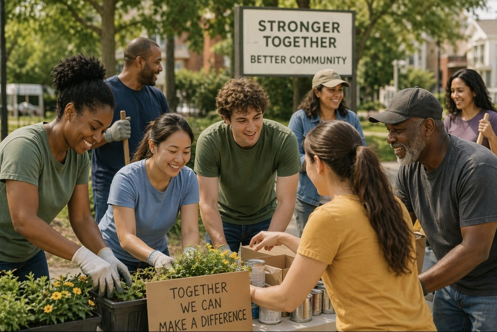

Our Mission
Our mission is to create a space where people can exchange skills and services in a way that is practical, supportive, and community-focused.

Trade skills. Build connections.
TradeTogether is a community-based platform where people can exchange services, support one another, and build stronger local connections.
Join the Community
Our mission is to create a space where people can exchange skills and services in a way that is practical, supportive, and community-focused.
In difficult financial times, trading services can help people save money while still getting important tasks done. It allows neighbors to help one another while meeting real everyday needs.
Visit these organizations to learn more about community support and volunteer opportunities:
Members can offer a skill they have and request a skill they need. For example, someone might offer tutoring in exchange for babysitting, graphic design in exchange for lawn care, or meal prep in exchange for pet sitting.